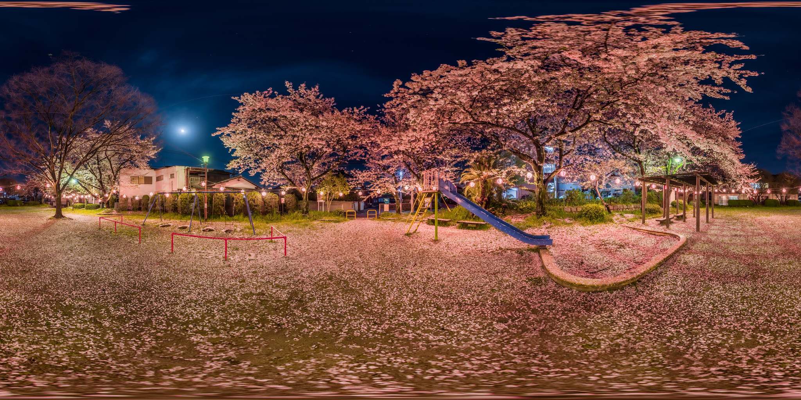

<!DOCTYPE html>
<html>
  <head>
    <title>My A-Frame Scene</title>
    <script src="https://aframe.io/releases/0.5.0/aframe.min.js"></script> 
  </head>
  <body>
    <div id="app"></div>
    <!--<a-scene>
      <a-assets>
        
      </a-assets>

      <a-sphere position="-1 1.25 -5" radius="1.25" color="#EF2D5E"></a-sphere>
      <a-torus-knot position="3 0.6 -3" radius="0.5" height="1.5" color="#FFC65D"></a-torus-knot>
      <a-sky src="#flowerSky"></a-sky>
    </a-scene> -->
    <script async defer src="browser/bundle.js"></script>
  </body>
</html>